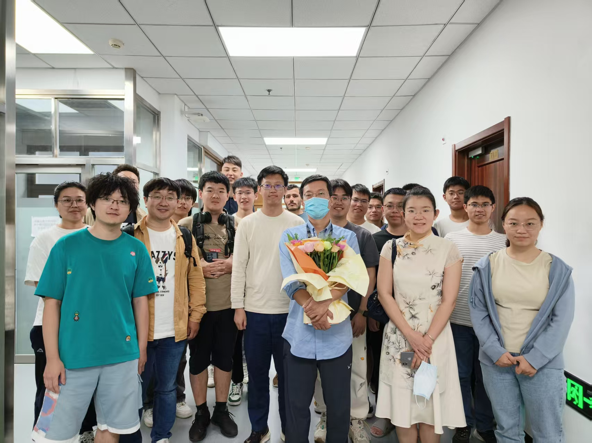

Introduction


We are a close-knit and harmonious team! Under Professor Ji’s insightful leadership and driven by a strong passion for academic exploration, we achieve significant research milestones.
The Intelligent Decision-Making Laboratory (THU-IDM) at Tsinghua University is directed by Professor Xiangyang Ji. Our research is centered on advancing decision-making intelligence, with a particular emphasis on generative modeling, reinforcement learning, and foundation models. The lab comprises members with diverse interdisciplinary expertise in fields such as automation, mathematics, physics, and computer science. Additionally, we maintain strong collaborative ties with international scholars, fostering a global perspective in our research endeavors.